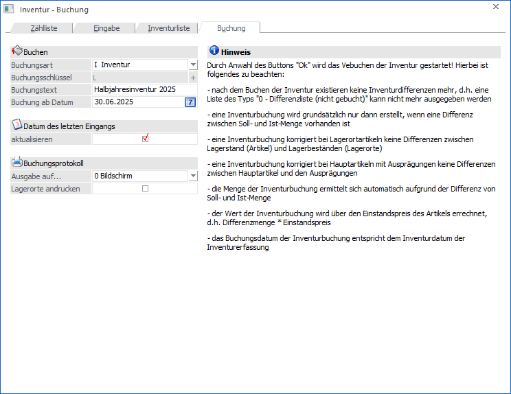
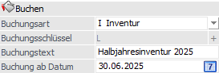
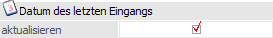
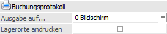
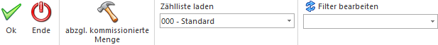

In dem Register "Buchung" können aufgetretene Differenzen zwischen Soll- und Ist-Mengen bzw. Lagerortbeständen automatisch gebucht werden.
Hinweis
Der Vergleich zwischen Soll- und Ist-Mengen bzw. Lagerortbeständen erfolgt nach den folgenden Varianten:
ü Ohne Zählliste - Artikel ohne
Lagerorte
Die Soll-Menge des Artikels wird aufgrund des "Inventurdatums"
gebildet, d.h. alle Artikeljournalzeilen "<=" (kleiner + gleich) dieses
Datums werden für die Soll-Ermittlung summiert und mit der Ist-Menge der
Inventurerfassung verglichen. Eine mögliche Differenz wird anschließend mit dem
Inventurdatum der Erfassung gebucht.
ü Ohne Zählliste - Artikel mit
Lagerorte
Die Soll-Menge wird pro Lagerort des Artikels aufgrund des
"Inventurdatums" gebildet, d.h. alle Lagerortjournalzeilen "<=" (kleiner +
gleich) dieses Datums werden für die Soll-Ermittlung summiert und mit der
Ist-Menge der Inventurerfassung verglichen. Eine mögliche Differenz wird
anschließend mit dem Inventurdatum der Erfassung gebucht.
ü Mit Zählliste - Artikel ohne
Lagerorte
Die Soll-Menge des Artikels wird aufgrund des "Inventurdatum von"
(gemäß Zählliste) gebildet, d.h. alle Artikeljournalzeilen "<=" (kleiner +
gleich) dieses Datums werden für die Soll-Ermittlung summiert und mit der
Ist-Menge der Inventurerfassung verglichen. Eine mögliche Differenz wird
anschließend mit dem "Inventurdatum von" der Zählliste gebucht.
ü Mit Zählliste - Artikel mit
Lagerorte
Die Soll-Menge wird pro Lagerort des Artikels aufgrund des
"Inventurdatum von" (gemäß Zählliste) gebildet, d.h. alle Lagerortjournalzeilen
"<=" (kleiner + gleich) dieses Datums werden für die Soll-Ermittlung summiert
und mit der Ist-Menge der Inventurerfassung verglichen. Eine mögliche Differenz
wird anschließend mit dem "Inventurdatum von" der Zählliste gebucht.

Für das Buchen stehen folgende Eingabefelder zur Verfügung:
Buchen

Ø Buchungsart
Aus der Auswahlliste kann eine bereits angelegte Lagerbuchungsart (Typ "0 - Lagerbuchung") ausgewählt werden. Folgende Punkte sind hierbei zu beachten:
ü Eigene
Buchungsart
Sinnvollerweise sollte eine eigene Buchungsart für die Buchung
der Inventurwerte angelegt/verwendet werden. Anhand dieser ist es möglich
Differenzbuchungen noch leichter zu identifizieren.
ü Buchungsschlüssel
Die
verwendete Lagerbuchungsart sollte zwingend den Buchungsschlüssel "L+" oder "P+"
aufweisen, wobei "L+" zu bevorzugen ist! Wird mit "P+" gearbeitet, so werden in
den Journalen die Differenzbuchungen mit "x -1" angezeigt / gerechnet, da es
sich "P+" um eine Abbuchung handelt.
Hinweis
Es wird pro Mandant, abhängig vom Benutzer, die zuletzt verwendete Buchungsart vorgeschlagen. Wird das Buchen zum ersten Mal angewählt, so wird die Lagerbuchungsart wie folgt ermittelt:
ü 1. Buchungsschlüssel "L+" und Bezeichnung beinhaltet "inventur"
ü 2. Buchungsschlüssel "L+"
ü 3. Erste gefundene Lagerbuchungsart
Ø Buchungsschlüssel
An dieser Stelle wird der Buchungsschlüssel der ausgewählten Buchungsart dargestellt.
Ø Buchungstext
Es kann die Eingabe eines Buchungstextes (50stellig, alphanumerisch) erfolgen, welcher im Artikeljournal angezeigt wird.
Ø Buchung ab Datum
Unter Eingabe der Inventur-Ist-Stände wurde der Inventurstand für jeden einzelnen Artikel bzw. Lagerort mit einem Datum (= Zählzeitpunkt) versehen. Die aus der Differenz zwischen Ist- und Soll-Stand resultierenden Lagerstandsberichtigungsbuchungen können in diesem Menüpunkt automatisch durchgeführt werden. Es werden dabei nur die Artikel bzw. Lagerorte gebucht, deren Inventur nach dem Ist-Stand Datum (Buchung ab Datum) liegen.
Hinweis
Wird mit einer Zählliste gearbeitet, so ist dieses Feld für eine Eingabe gesperrt und wird mit dem Datum "Inventurdatum von" gemäß Zählliste belegt.
Datum des letzten Eingangs

Ø Datum des letzten Eingangs/Ausgangs/Produktion
Mit dieser Checkbox kann bei der Inventurbuchung festgelegt werden, ob das Datum gemäß der
Lagerbuchungsart in den Artikelstamm zurückgeschrieben werden soll (oder nicht).
ü Das Feld "Datum letzter Eingang" im Artikelstamm wird aktualisiert bei einer Lagerbuchungsart mit Buchungsschlüssel "Lagereingang".
ü Das Feld "Datum letzter Ausgang" im Artikelstamm wird aktualisiert bei einer Lagerbuchungsart mit Buchungsschlüssel "Verkauf".
ü Das Feld "Datum letzte Produktion" im Artikelstamm wird aktualisiert bei einer Lagerbuchungsart mit Buchungsschlüssel "Produktion".
Hinweis
Ist die Checkbox "aktualisieren" nicht aktiv, so erfolgt keine Aktualisierung des oben genannten Feldes im Artikelstamm. Standardmäßig ist diese aktiviert und im weiteren Verlauf wird die Einstellung benutzerabhängig und pro Mandant gespeichert.
Buchungsprotokoll

In diesem Bereich können Einstellungen für das Buchungsprotokoll hinterlegt werden, wobei diese benutzerspezifisch gespeichert werden.
Ø Ausgabe auf…
An dieser Stelle kann definiert werden, ob das Buchungsprotokoll am Bildschirm (Standard) oder auf den Drucker ausgegeben werden soll.
Ø Lagerorte andrucken
Mit Hilfe der Option "Lagerorte andrucken" werden auf dem Buchungsprotokoll auch die Bestandsveränderungen pro Lagerort ausgewiesen.
Buttons

Ø Ok
Nach Anwahl des Buttons "Ok" bzw. der Taste F5 werden die Inventurdifferenzbuchungen durchgeführt und ein Protokoll gemäß der Einstellung "Ausgabe auf…" ausgegeben.
Ø Ende
Durch Drücken des Buttons "Ende" bzw. der Taste ESC wird das Fenster geschlossen.
Ø abzgl. kommissionierte Menge
Wird dieser Button aktiviert (diese Einstellung wird benutzerspezifisch gespeichert), so werden bei der Berechnung des Soll-Lagerstandes auch die bereits kommissionierten Mengen berücksichtigt. Dieser Button bleibt solange aktiviert, bis er wieder deaktiviert wird.
Hinweis
Bei Artikel mit Lagerorten des Lagermanagements hat dieser Button keine Auswirkung, da keine Kommissionierungszeilen pro Ort gebildet werden.
Ø Zählliste laden
Mit Hilfe der Auswahlliste "Zählliste laden" kann eine zuvor angelegte Zählliste geladen werden. Hierdurch wird das Feld "Buchung ab Datum" für eine Eingabe gesperrt und automatisch mit dem Datum "Inventurdatum von" gemäß Zählliste belegt.
Ø Filter bearbeiten
Durch Anklicken des Buttons "Filter bearbeiten" kann die Inventurerfassung nach frei definierbaren Kriterien eingeschränkt werden.
Hinweis
Der Filter steht nicht zur Verfügung, wenn mit einer Zählliste gearbeitet wird!